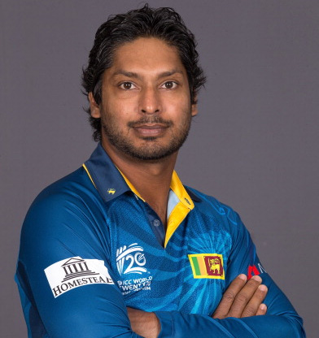

Kumar Chokshanada Sangakkara is a former Sri Lankan cricketer and captain, and is widely regarded as one of the world's most influential cricketers and one of the greatest batsmen of all-time
| Format | Matches | Runs |
|---|---|---|
| Tests | 134 | 12400 |
| ODIs | 404 | 14234 |
| T20Is | 56 | 1382 |